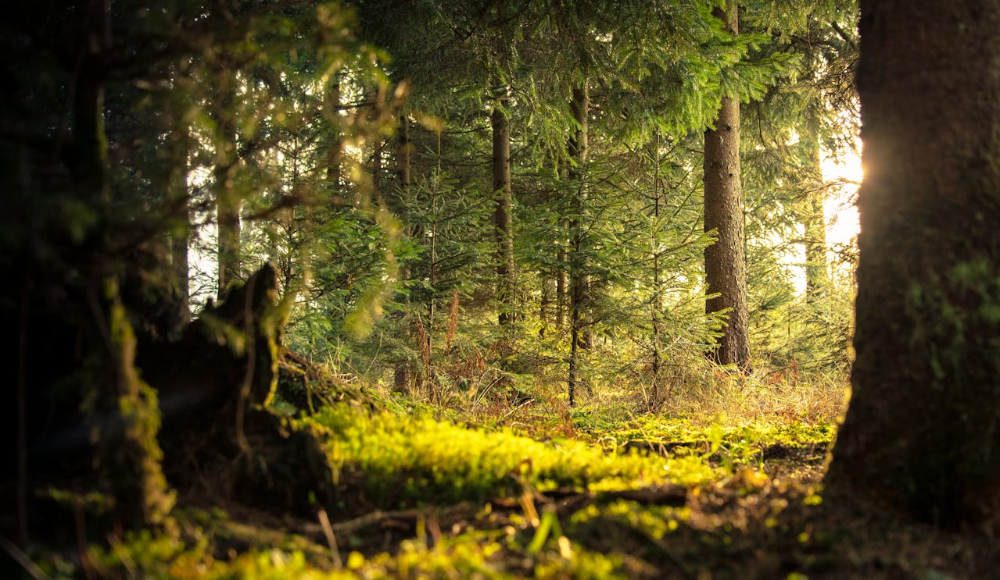
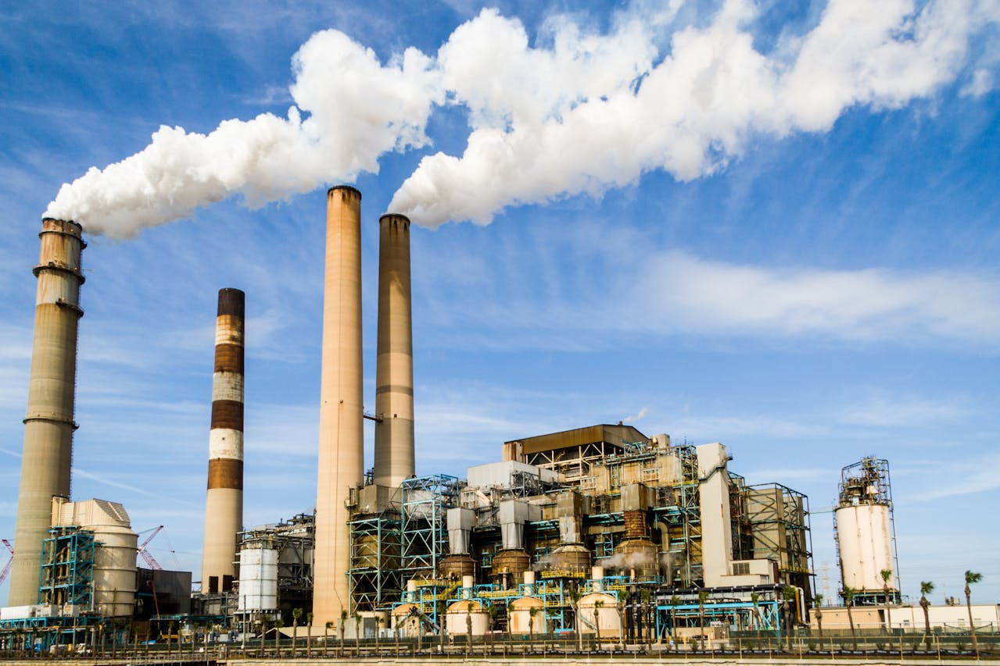
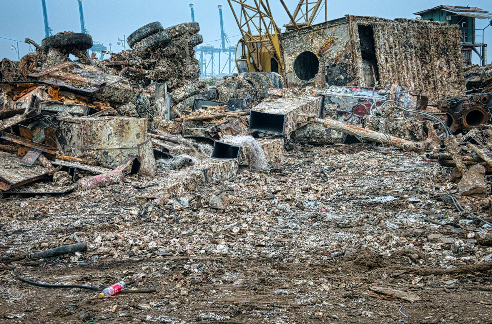
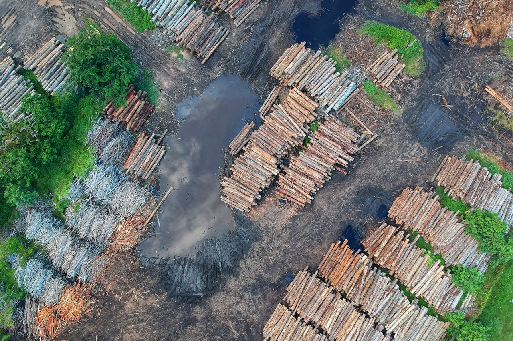
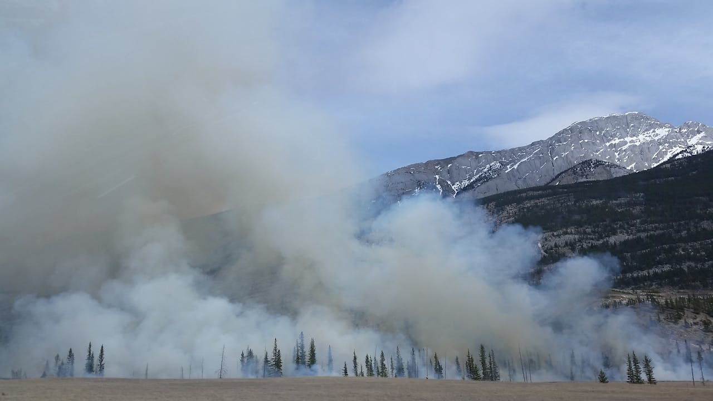
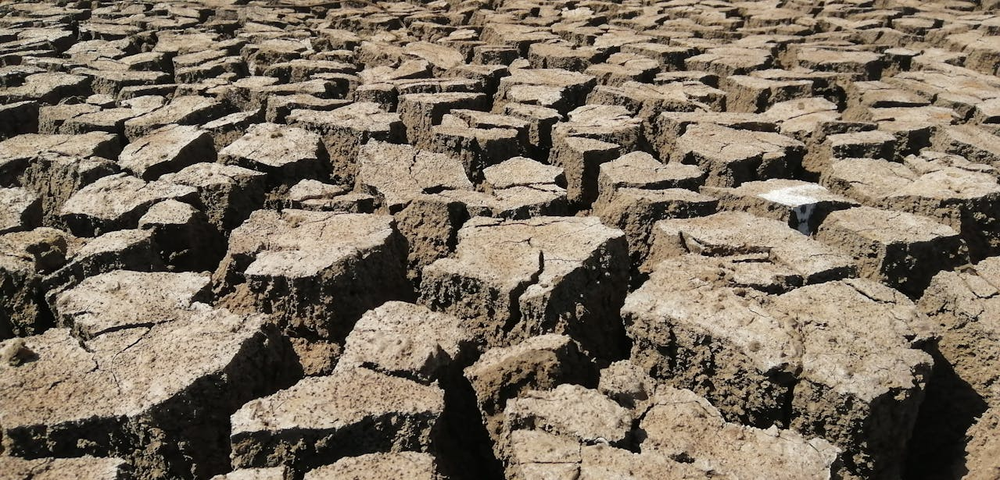

Meio ambiente é o conjunto de elementos, processos biológicos, físicos e químicos que criam condições e mantêm a vida no planeta Terra. É dele que retiramos os elementos essenciais para a nossa sobrevivência, como água, ar, alimentos e matérias-primas, um dos motivos pelos quais a sua conservação se faz tão importante.
A poluição do ar ou atmosférica pode ser descrita como a presença, no ar, de gases poluentes, material particulado, agentes biológicos e outros elementos que alterem a sua qualidade. Esse problema é ocasionado principalmente pela queima de combustíveis fósseis e pela atividade industrial nos grandes centros urbanos, atividades essas que liberam substâncias como gás carbônico (CO2), monóxido de carbono (CO), óxidos de enxofre (SO2 e SO3) e óxido de nitrogênio (NOx) na atmosfera.
Esse tipo de poluição é causador de outros problemas ambientais, como as chuvas ácidas (chuvas com elevada acidez) e as ilhas de calor (maior temperatura das cidades em relação às áreas vizinhas), típicas de áreas urbanas. Em maior escala, a poluição do ar afeta o equilíbrio atmosférico e intensifica o efeito estufa, o que causa o aquecimento global. Entre os países com maior poluição atmosférica estão Índia, Burkina Faso, Tailândia, China e Azerbaijão.
A poluição hídrica acontece quando substâncias são lançadas nos corpos d’água e alteram as suas propriedades físicas, químicas e biológicas, o que pode causar a contaminação e, como consequência, gerar severos prejuízos para a população que depende daquele recurso e para a biodiversidade aquática. O descarte irregular de lixo e de resíduos urbanos, como esgoto, e industriais estão entre as principais causas da poluição hídrica.
Uma das discussões acerca da poluição hídrica gira em torno da quantidade de plástico e microplástico presente nos oceanos. O acúmulo dessas substâncias prejudica a fauna marinha e pode até mesmo afetar a saúde humana, pela contaminação da cadeia alimentar de espécies de água salgadas.

A poluição dos solos é descrita como a degradação química do substrato. Tem origem no descarte irregular de lixo e dejetos urbanos, industriais, da mineração e das usinas geradoras de eletricidade, no uso intensivo de defensivos agrícolas e agrotóxicos para a produção, no desmatamento e outros eventos que contribuem para a perda de fertilidade dos solos.
De acordo com a Organização para a Alimentação e Agricultura (FAO), agência especializada da ONU, a poluição dos solos ameaça a qualidade das águas e dos alimentos que ingerimos, além de afetar a garantia da segurança alimentar para uma maior parcela da população mundial devido a isso. Entre as áreas onde esse problema é mais recorrente estão a Ásia Central, o Norte da África e a Europa.
Também chamado de desflorestamento, o desmatamento é a retirada da cobertura vegetal parcial ou total de um determinado lugar. A perda da cobertura vegetal deixa os solos desprotegidos e mais vulneráveis, ao mesmo tempo que afeta o funcionamento dos ecossistemas, contribui para o assoreamento dos rios e interfere na dinâmica dos climas locais e, a longo prazo, do clima global.
Também chamadas de incêndios florestais, as queimadas humanas são uma prática de limpeza de uma área com o uso de fogo. O fogo das queimadas elimina parte da biodiversidade das matas e contribui para a emissão de gases poluentes na atmosfera. Em alguns casos, como observamos recentemente na costa oeste dos Estados Unidos, na Austrália e no Sul da Europa, os incêndios são causados pelo calor extremo e pelo tempo seco, que resseca a vegetação e facilita o espalhamento das chamas.
A desertificação é um fenômeno de degradação química e física dos solos, resultante do esgotamento da capacidade de produção do solo, o que tem como causas a exploração desse recurso de maneira intensiva para fins econômicos, o manejo inadequado, as queimadas sucessivas e o desmatamento. Fatores de ordem natural podem contribuir para a desertificação de áreas, como a presença de climas secos e as propriedades naturais do substrato.
